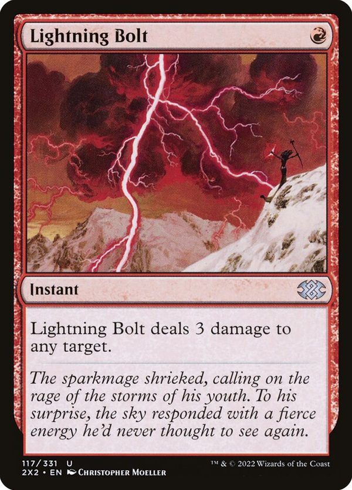
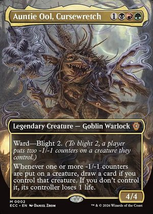

mtg-search · agentic retrieval · Magic: The Gathering
Does a search engine help a deck-building agent?
MAGIC! No, not that kind of magic: the Gathering. I gave an AI agent a search engine over every card, and gave it tools to validate deck building.
fewer tokens per task than reading every card: 10.6k vs 2.91M. The card text does not fit in a 1M-token context.
relevant cards in the top 10, search vs grep with the same instructions, with 26% fewer tokens.
deck fit of the agent's card adds, from memory vs with search, graded blind on 14 test decks.
I recently got into Magic: The Gathering, and without knowing it signed up for a learning curve of more than 34,000 unique cards. Yes, over 34,000. Once I got the taste for it, I started looking for cards that might fit my decks, and I quickly turned to an LLM and a handful of websites full of card data to get me up to speed.
The first wall I hit was the rules. The LLM could not reliably check that the cards it wanted to add were allowed in the deck: wrong colours, cards that are not legal, cards already in the list. The second wall was taste. It kept reaching for the same popular, mainstream cards everyone already plays. So I started building structure around it: a database of every card's official text, tools the agent can call to check its picks, and a search over the text. Then the ball started rolling, and this post is where it rolled to.
01 · The dataEvery Magic card's official text: 3.1M tokens, too much to read for every task
Everything here runs on Scryfall's Oracle cards data. Scryfall is the community's card database, and it publishes a fresh copy every day. The Oracle file has one entry per distinct card, whatever the printing, with the card's current official rules text: the Oracle text that Wizards of the Coast keeps up to date. That text can differ from the printed card: older printings of Lightning Bolt say “target creature or player”, while the Oracle text says “any target”.
Each entry also carries the mana cost, type line, colour identity and legality in every format. Scryfall's Tagger project adds community labels for what cards do; the tools show them as roles.
- Cards
- 34,646one per distinct card; tokens, emblems and art cards dropped
- Rules text
- 3.1M tokensabout 7.5M characters across all cards
- Function tags
- 4,577Tagger labels such as
mana-rockandsweeper - Rulings
- 78,973official clarifications, shown by
get_card

What search_cards returns for it
- 1name
- 2mana cost, and the colour and mana value it gives
- 3type line
- 4rarity, from the set symbol's colour
- 5rules text, as the current Oracle wording
- art and flavour text: never sent
- not on the card: search rank, Tagger roles, format legality
The simplest design would skip search entirely and give the agent every card to read. I tried that.
On a 12-task sample, reading everything gave slightly better answers than search (not statistically significant). The full 113 tasks would have read about 302M tokens, so I stopped there.
Reading everything is a ceiling, not a design. The agent needs a way to find cards: a search engine, or at least grep over the text.
02 · How the test sets are builtThree test sets, and two graders
363queries
Search benchmark
Which engine ranks the right cards first?
- Built from
- 65Tagger function tags phrased as a player would ask
- 46handwritten rules-text queries
- 222rewordings with no rules-text words
- 30open-ended deck needs
- Correct cards
- The cards carrying the tag, or matching a rules-text pattern that was checked against Scryfall's own search. The top answers to each deck need were reviewed by hand.
113agent tasks
Agent search tasks
Does an agent with search find more relevant cards than one with only grep?
- Built from
- Requests from the benchmark:
- 65deck needs
- 15card attributes, such as a 1-mana red burn instant
- 33specific cards to find
- Protocol
- Up to 5 tool calls, then a ranked list of up to 20 cards.
- Scored by
- Share of the top 10 that is relevant: on the benchmark's list of correct cards, or graded relevant by the relevance grader.
183precon decks
Precon decks
Does the agent add, cut and swap better cards in real Commander decks?
- Built from
- Preconstructed decks, the ready-made Commander decks Wizards sells (decklists from
MTGJSON):
- 14test decks, released after 1 Nov 2025
- 15tuning decks, released earlier
- Protocol
- The agent sees all 100 cards and proposes 20 adds, 10 cuts or 10 swaps.
- Scored by
- Player add rates from EDHREC, which pools thousands of players' decklists: the share of players' copies of each deck that add or cut each card. And the deck-fit grader, for adds.
Each grader is a separate Claude model that grades cards one batch at a time, 15 cards per call, in random order. It never sees which agent proposed a card, and it gets no popularity or price data. Hidden random cards are mixed into the batches, to check that the grader does not accept everything.
Relevance grader
for the agent search tasks
- Sees
- The request with its constraints (colour, card type, mana value, format), and each card's rules text
- Grades
- 2does what was asked and meets every constraint
- 1a weaker, narrower or indirect version a player might still consider
- 0does not do it, or breaks a constraint
- Relevant
- Grade 1 or 2
- Check
- It accepted 0.6% of hidden random cards that met the constraints
Deck-fit grader
for the precon decks
- Sees
- The deck (the commander's rules text with its name hidden, plus the other 99 card names) and each proposed add's rules text
- Grades
- 2a clear upgrade: supports the commander or the deck's plan, or fills a role the deck is short of (ramp, card draw, removal, interaction), and beats the deck's weakest cards
- 1a reasonable but low-priority upgrade
- 0no specific reason to be in this deck, or breaks a deck rule
- Deck-fit score
- Mean grade of the 20 adds, scaled 0 to 1; adds that break a deck rule count 0
- Check
- It accepted 12% of hidden random legal cards and none of the cards already in the deck
Agents and graders are Claude Sonnet 5.5 in Claude Code, with no web, file or shell access: only the tools under test. No list of correct cards and no popularity or price data ever reaches an agent. The deck-fit criteria were settled on the tuning decks before any test deck was graded.
03 · Search vs no search infrastructureWith the same instructions, search finds more of the right cards, with fewer tokens
The same agent ran the 113 agent search tasks from Section 2 three ways.
- Search: the mtg-search
searchtool, with minimal instructions: the request, a budget of 5 tool calls and the answer format, and nothing on how to search. - Grep, same prompt: a regular expression over the plain card text, with no ranking and no filters, and the same minimal instructions as search.
- Grep, tuned prompt: the identical grep tool, with a prompt written after a first test run. It shows how a card is laid out in the file, explains how matching works, and adds general search advice and an example pattern. The only difference between the two grep runs is the prompt.
| Search | Grep, same prompt | Grep, tuned prompt | Read everything* | |
|---|---|---|---|---|
| Per task, 113 tasks | ||||
| Tokens | 10.6k | 14.3k | 20.9k | 2.91M |
| Claude Code turns | 4.0 | 4.6 | 4.9 | 5.6 |
| Tool calls | 2.0 | 2.5 | 2.9 | 0 |
| Seconds | 10.3 | 17.0** | 10.9 | 53.6 |
| Relevant in the top 10 | ||||
| Deck needs (65) | 97.8% | 95.4% | 97.7% | – |
| Card attributes (15) | 100% | 48.0% | 92.7% | – |
| Specific card found | ||||
| Find-this-card (33) | 100% | 85% | 94% | – |
*Read everything: the 12-task sample from Section 1. **Two slow tasks (159 s and 322 s); the median is 11.3 s. Rescored on 15 October 2026 after a fix to card-name matching: a few answers, such as "Lightning Bolt", had been matched to a double-faced card that shares the name. Every change is under a point.
With the same instructions, grep falls behind on card attributes, such as a 1-mana red burn instant. Only 48% of its top 10 is relevant, against 100% for search. A card's mana cost, type line and rules text sit on separate lines of the file, and without a description of the layout grep guessed it wrong: 29% of its calls matched nothing. On deck needs, whose rules-text phrases sit on one line, the two stay close (95% vs 98%).
Search
- 115 cards
“deals damage to any target”colour Rtype instantmana value 1 - 215 cards
“red instant 1 mana deals 3 damage to any target”colour identity Rtype instantmana value ≤ 1
Top 10 of its 17 answers
- 1Lightning Bolt✓
- 2Shock✓
- 3Play with Fire✓
- 4Tarfire✓
- 5Galvanic Blast✓
- 6Wild Slash✓
- 7Melt Through✓
- 8Spikefield Hazard // Spikefield Cave✓
- 9Collateral Damage✓
- 10Sonic Seizure✓
2 calls · 9.5k tokens
Grep
- 10 matches
^[^\n]*\{R\}\n?Instant\b[^\n]*deals \d damage to any target - 20 matches
(?i)\{R\}.*instant.*deals? (\d|X) damage to (any target|target creature or (player|planeswalker)) - Agent: “Format unknown; try simple.”
- 36 matches
Lightning Bolt - 40 matches
^[^{\n]*\{R\} — Instant — .*deals? \d damage to any target - Agent: “Name precedes cost; allow name chars.”
- 50 matches
^[^{]*\{R\} — Instant — .*damage to any target
Its whole answer
- 1Lightning Bolt✓
- 2empty
- 3empty
- 4empty
- 5empty
- 6empty
- 7empty
- 8empty
- 9empty
- 10empty
5 calls · 15.5k tokens
Search needed no prompt tuning. Its first prompt, never tuned, gives the same results as the minimal one: 98.6% vs 98.3% relevant cards in the top 10.
With the same instructions, search finds more of the right cards than grep, with fewer tokens. Grep catches up only with a prompt tuned to the card file, and then uses twice the tokens.
04 · Choosing the enginemLateOn reads rules text best, and the wording of the query matters most
I compared search engines on the search benchmark: 363 queries, each with a list of the cards that answer it. The score is nDCG@10 on a 0 to 100 scale; 100 means the correct cards fill the top 10, best first. mLateOn is a multi-vector text model: it matches each word of the query to the closest word in each card (the late interaction primer draws it).
So mtg-search runs mLateOn, and its tool description tells the agent to write queries the way
card text is worded. The Docker image returns exactly the same top 10 as the tested search on
every benchmark query, in 130 to 340 ms per search. It has three read-only tools,
search_cards, get_card and find_similar, with five
filters.
The agent searches only when told when to. Offered the tools without a cue, Sonnet made 0 tool calls in 42 deck tasks. Each tool description therefore opens with “Before recommending cards for a deck, call this to find candidates instead of listing them from memory.” With that sentence the agent searched in 25 of 30 tasks on the tuning decks; without it, in 10 of 30.
05 · Why one way of scoring is not enoughPlayer add rates favour popular cards, and miss a real gain in deck fit
Every automatic list of correct cards has a blind spot. The tag and pattern lists miss cards that do the job in other words: in the agent search tasks, 22 to 23% of each agent's top-10 cards were graded relevant but were missing from the lists (636 such cards among all the agents' picks). The patterns also reward exactly the wording grep can rebuild.
Player add rates have a different blind spot. They reward what many players add, and that is mostly the popular cards. A deck can also be improved in many different ways.

Commander · test deck
Auntie Ool, Cursewretch
From memory fit 0.33
No tool calls. All 20 adds are legal.
- 1Bloodtithe Harvester
- 1Vraska, Golgari Queen
- 1Toxic Deluge
- 0Damnation
- 0Blood Artist
- 0Zulaport Cutthroat
- 0Pitiless Plunderer
- 2Overgrown Tomb
- 2Blood Crypt
- 1Stomping Ground
- 1Cultivate
- 1Kodama's Reach
- 0Pawn of Ulamog
- 1Deadly Rollick
- 0Bloodghast
- 0Jade Mage
- 1Sheoldred, the Apocalypse
- 0Doubling Season
- 1Vampire Nighthawk
- 0Rhythm of the Wild
With mtg-search fit 0.95
One search_cards call, colour identity BRG · legal in Commander:
Put a -1/-1 counter on target creature.Whenever you put one or more -1/-1 counters on a creatureProliferate.Put a -1/-1 counter on each creature your opponents control
- 2Obelisk Spider
- 2Spitting Dilophosaurus
- 2Shadow Urchin
- 2Grim Affliction
- 1High Perfect Morcant
- 2Persistent Constrictor
- 2Nightmare Sower
- 2Decimator Beetle
- 2Exemplar of Strength
- 2Blight Rot
- 2Scar
- 2Contagion Engine
- 2Soulstinger
- 2Bile-Vial Boggart
- 2Festering Mummy
- 2Cultbrand Cinder
- 2Instill Infection
- 2Defiant Greatmaw
- 2Blur of Blades
- 1Grief Tyrant
From memorymedian rank 224
With mtg-searchmedian rank 13,816
most playedEDHREC rank, log scalerarely played
| Add task, 14 test decks, 3 repeats | From memory | With mtg-search | Test |
|---|---|---|---|
| Tasks in which the agent searched | 0% | 40% | p = 2×10⁻⁶ |
| Adds that break a deck rule | 13.2% | 3.0% | p = 0.002 |
| Deck-fit score (0 to 1) | 0.45 | 0.65 | p = 0.002 |
| Match with player add rates (nDCG@10, 0 to 1) | 0.174 | 0.262 | p = 0.057, not established |
From memory: the agent was offered the tools without any cue to use them, and never called them. With mtg-search: the server with a cue to search; in the other 60% of tasks the agent still answered from memory. Breaking a deck rule means outside the commander's colours, not legal in Commander, or already in the deck.
On the same adds, the two ways of scoring disagree. The deck-fit score shows a clear gain: better on 13 of 14 decks, and it holds on rule-abiding adds alone (0.52 vs 0.67). The match with player add rates is not significant.
The reason is popularity. With mtg-search, the agent's typical add is around the 1,000th most-played card on EDHREC, against the 300th from memory, and player add rates favour the most-played cards. The deck-fit grader shows no such pull: if anything, its top grades went to less popular cards.
In the swap task (10 one-for-one swaps), the deck-fit gain was smaller and not significant. The deck-fit grader is the same model family as the agent.
With mtg-search, the agent's adds fit the deck better: 0.45 → 0.65, better on 13 of 14 test decks. Player add rates barely register this (p = 0.057), so each test set is scored two ways: by an automatic list of correct cards and by a grader.
06 · Reading the resultThis is a small corpus: at scale the gap between grep and search will grow
34,646 cards and 3.1M tokens of text is a small corpus. A grep over it takes a fraction of a second, and a strong agent can page through the matches. Grep also had a second advantage: Sonnet knows Magic's rules-text templating by heart, so it writes patterns that hit.
Even so, grep matched search's relevance only with a prompt that describes the card file, and then it used twice the tokens, because its matches come unranked, in file order. That cost scales with the corpus. More documents mean more matches per pattern to page through, while ranked search still returns the best ten. In a larger collection, or one whose wording the model has not memorised, expect the token and turn gap to widen, and the quality gap with it. This is an expectation, not something measured here.
Read the grep result as the best case for no search infrastructure: a small corpus, a model that knows its wording, and a prompt tuned to the file. Search needed none of that here, and the effect of embeddings over grep should be more pronounced on anything bigger.
Still openWhat I would check next
- A grader from another model family, to check that Sonnet does not favour its own picks. It needs API budget.
- Fresh test decks, once players' data on them matures, around late November.
- Repeats: the share of tasks in which the agent searches swings by 20 points between identical runs.
Everything is public: the code and the run records on GitHub, the server image on GitHub Packages, and the card index and benchmarks on Hugging Face. Sources: Scryfall bulk data, Scryfall Tagger, mLateOn, MTGJSON, EDHREC. Card text © Wizards of the Coast, used under the Fan Content Policy.